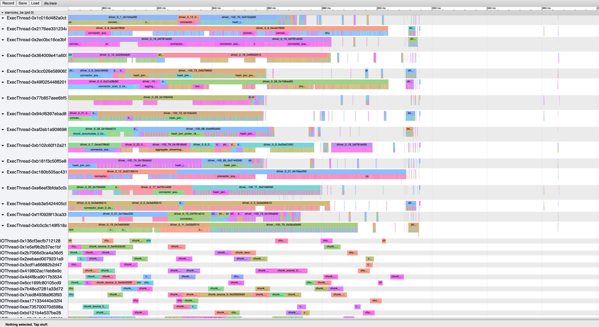

使用Chrome Trace Viewer来观察调度
StarRocks增加了Pipeline功能之后，所有的query被拆解成为pipeline/operators，在固定大小的线程池上面进行调度。因为pipeline driver不在和线程绑定，那么就比较难观察pipeline driver具体执行的情况：什么时候被调度，什么时候开始，什么时候结束等等。
我司同学为了方便观测调度情况，增加了 [[Enhancement] introduce query debug trace for BE by silverbullet233 · Pull Request #7649 · StarRocks/starrocks](https://github.com/StarRocks/starrocks/pull/7649) 这个PR. 有了这个PR之后，就可以看到IOTask以及Pipeline Driver的执行情况，主要实现原理就是跟踪pipeline driver执行情况进行打点，query结束的时候输出成为json. 这个json文件可以被Chrome Trace Viewer读取展示，可以比较直观地看到调度细节。
不过之前同学记录的trace, 是以Pipeline Driver为视角进行的（应用角度），而不是以Thread为视角进行的（资源角度）。所以我在这个PR的基础上进行了扩展 [[Enhancement] extend query trace by dirtysalt · Pull Request #12982 · StarRocks/starrocks](https://github.com/StarRocks/starrocks/pull/12982) 以资源角度来观察，就可以从资源的角度去进行思考和优化。比如下图中，可以看到在IOThread上，有许多chunk source执行之间是存在空隙的，如果这些空隙可以缩短的话，那么整个处理时间也可以缩短。

我觉得这是一个非常强大的功能，Chrome Trace Viewer也是非常强大的工具。网上可用的资料不是特别多，我整理了一下几个有帮助的链接，尤其是第一个：
- 强大的可视化利器 Chrome Trace Viewer 使用详解
- hrydgard/minitrace: Simple C/C++ library for producing JSON traces suitable for Chrome's built-in trace viewer (about:tracing).
- Trace Event Format - Google 文档 (这个里面有JSON文件格式的具体细节，但是有点长，许多东西可能也用不上)
- Perfetto - System profiling, app tracing and trace analysis (更加完整的工具包)
—
我这里尝试整理了一下大致的格式。整个JSON最外层如下 `{"traceEvents":[ events ]}`. 我这里面只使用了两类event:
- Normal Event. 普通事件（记录事件的起始时间）
- Meta Event. 元信息事件（记录某些事件的元信息，比如线程名称/进程名称等）
Normal Event有两类标注方式, 使用 `ph` 字段区分：
- cat 字段表示 category，这个不会展现
- name 字段表示 name, 这个会展现在时间轴上
- pid, tid 表示进程和线程id. 按道理应该是uint32, 但是如果是字符串也行(不过对于 Perfetto 要求必须是uint32)
- args 表示参数信息，这个基本不使用
- ph 表示 phase,
- 如果是 "X", 那么需要提供 ts/dur 字段，表示开始时间点和持续时间
- 如果是 "B"/"E", 那么只需要提供 ts 字段，表示时间点
Meta Event 主要是为了标记进程/线程名字
- `{"name": "process_name", "ph": "M", "pid": 0, "args": {"name": "starrocks_be"}}`
- `{"name": "thread_name", "ph": "M", "pid": 0, "tid": "0x2b7066d3ca4a36d5", "args": {"name": "IOThread-0x2b7066d3ca4a36d5"}}`